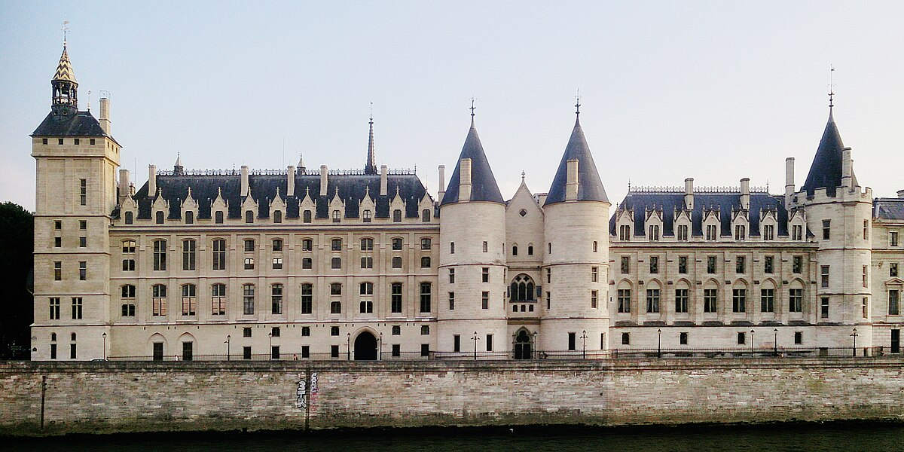

Monumento
Conciergerie
Basilica neobizantina simbolo della Terza Repubblica. Spunto per riflettere su religione, politica e memoria collettiva.
Approfondisci →Due simboli di Parigi: dalla prigione della Rivoluzione alla torre della modernità
Due tappe per connettere geografia, arte e storia contemporanea.
Basilica neobizantina simbolo della Terza Repubblica. Spunto per riflettere su religione, politica e memoria collettiva.
Approfondisci →Pagine di democrazia e conflitto (1871): Hôtel de Ville, Place de la Bastille e altri luoghi della memoria civile.
Approfondisci →Programma dettagliato del quarto giorno
4 Rue Emile Reynaud, 75019 Paris
Linea 7 - Stazione Châtelet
Verso la Torre Eiffel
Linea 7, 9 - Stazioni Chaussée d'Antin — La Fayette e Alma-Marceau